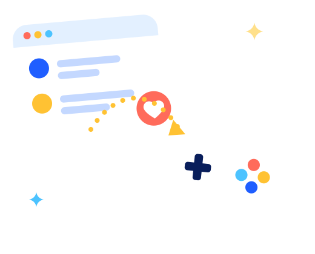
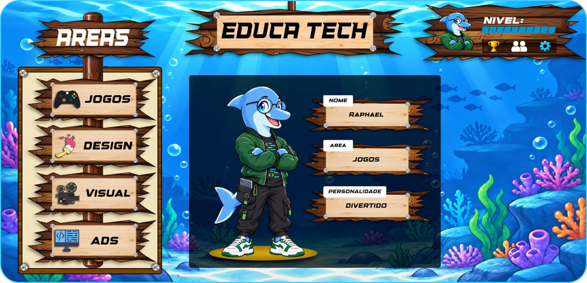
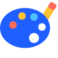
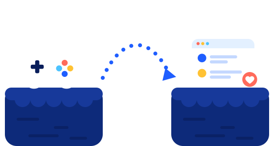

Nexa Quest
Um jogo para aprender. Uma rede para criar.
O Nexa Quest une aprendizagem prática e colaboração entre estudantes: um jogo com trilhas e desafios, e uma rede social para criar projetos em equipe.



Assistir à demonstração
Abrir no YouTubeJogo educativo
Aprenda na prática
Siga trilhas de aprendizagem e aprenda de forma interativa, fazendo.
-
Missões e desafios
Atividades práticas dentro de cada trilha, para aplicar o que você aprendeu.
-
XP e níveis
Dentro do jogo, cada atividade concluída soma XP e ajuda você a avançar de nível.
-
Conquistas
Marcos que você destrava pelo caminho, dentro do jogo.
Trilhas em quatro áreas
Cada área tem sua trilha. Comece pela que mais combina com você.
-
Desenvolvimento de Sistemas
Lógica de programação, sites e aplicativos que funcionam de verdade.
-

Design
Interfaces, identidade visual e ilustração: do rascunho à peça pronta.
-
Multimídia
Vídeo, áudio e animação para contar boas histórias.
-
Jogos Digitais
Personagens, regras e fases: aprenda a criar jogos do zero.

Aprenda no jogo, aplique nos projetos
O que você desenvolve no jogo pode ser usado em projetos colaborativos na rede social. Essa ligação é o grande diferencial do Nexa Quest.
Seus projetos e atualizações ficam reunidos no seu perfil, para você mostrar o que já criou. O progresso do jogo (XP e níveis) ainda não aparece no perfil: essa integração está em planejamento.
Comece pelo primeiro passo
Crie sua conta, escolha uma área e entre na primeira trilha.